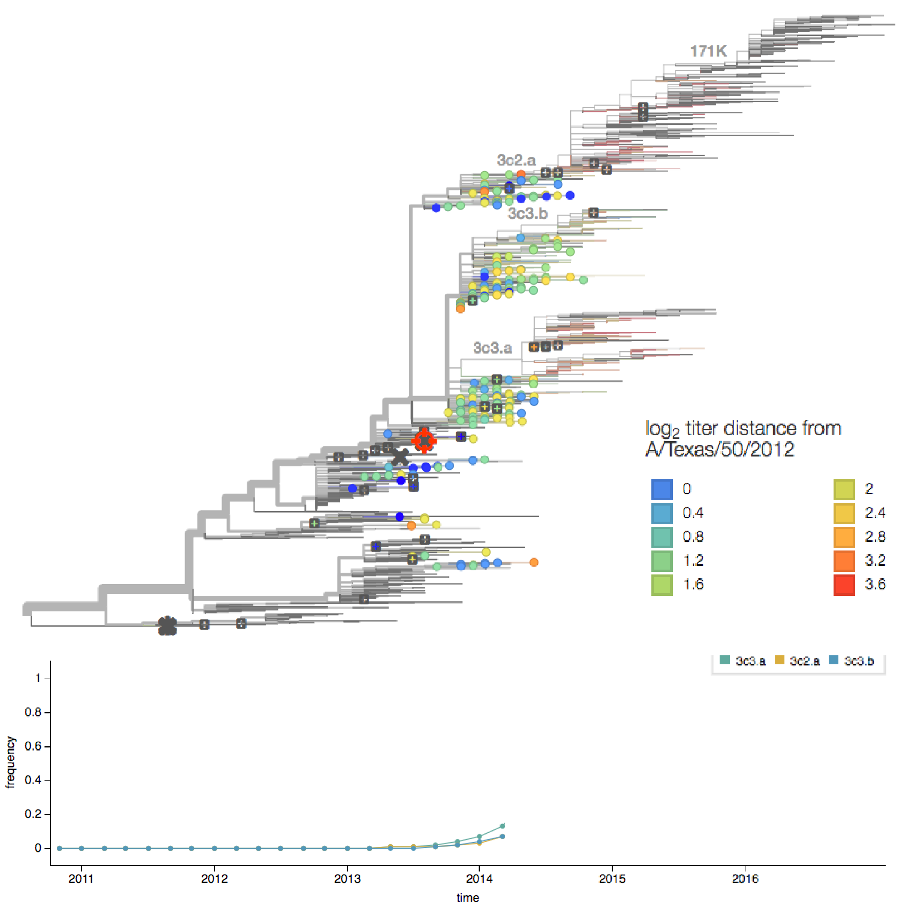
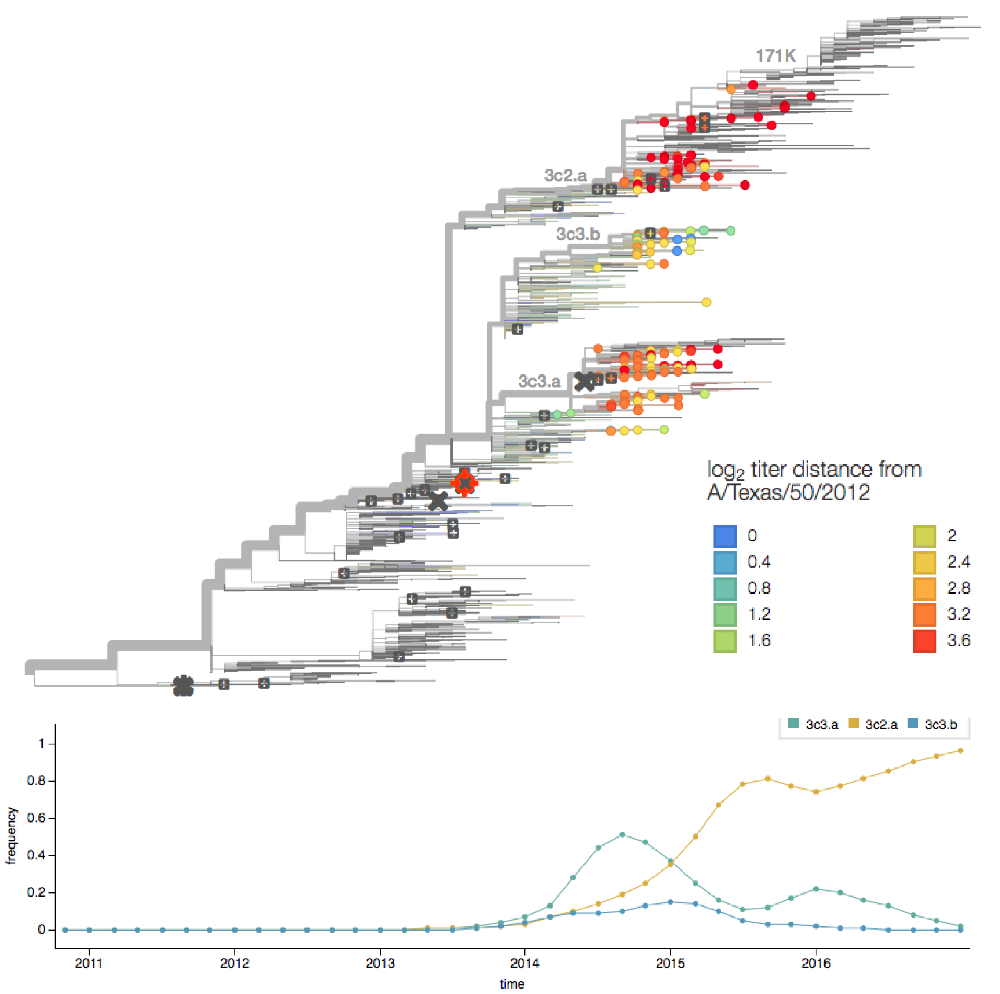
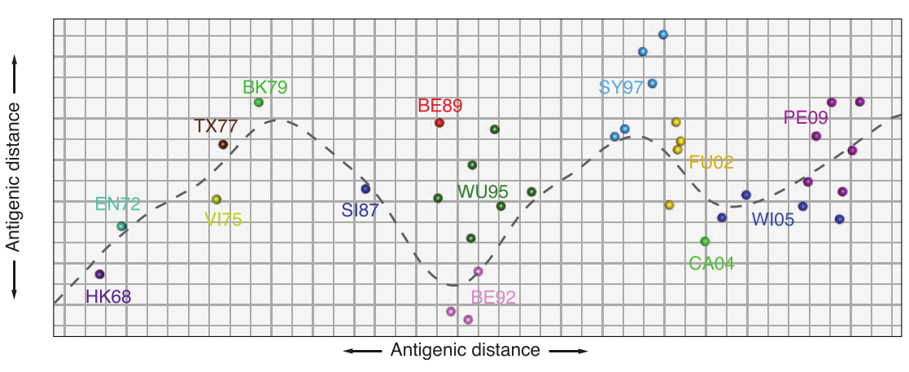
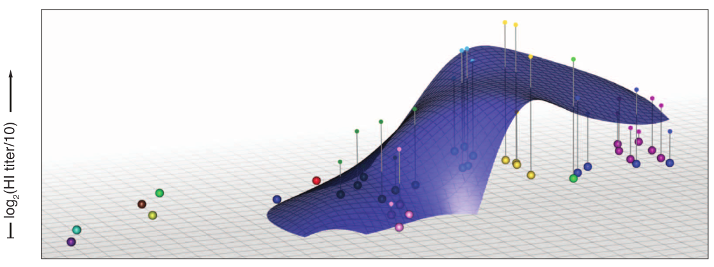
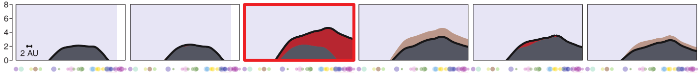
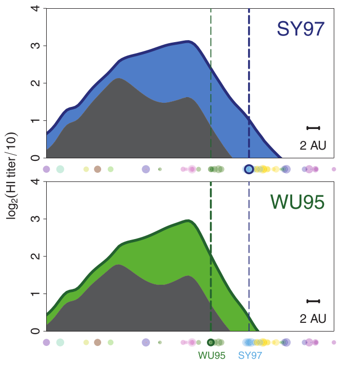

Seasonal influenza vaccines promote protective responses against historical strains.
Kelsey Florek
MPH Defense
02 Dec 2016
Slides available at:
www.k-florek.net/talks
vaccine effectiveness is dependent on the antigenic match

seasonal vaccine production cycle

determining the vaccine strain 2013-14

determining the vaccine strain 2014-15

antigenic cartography

generating an antibody landscape

antibody landscape over time

antigenically advanced vaccines boost responses against previously circulating strains

Vaccination with an antigenically advanced vaccine boosts antibodies against historical influenza strains in children with limited exposure histories.
study design
- cohort study
- children aged 5-17 years
- subjects recuited on previous exposure
- 2014-15 IIV and uninfected n ~ 80
- 2014-15 flu A infected n ~ 20
- 2010-15 unvaccinated and uninfected n ~ 80
- recruitment letters were sent to parents of potentially eligible children based on the above categories